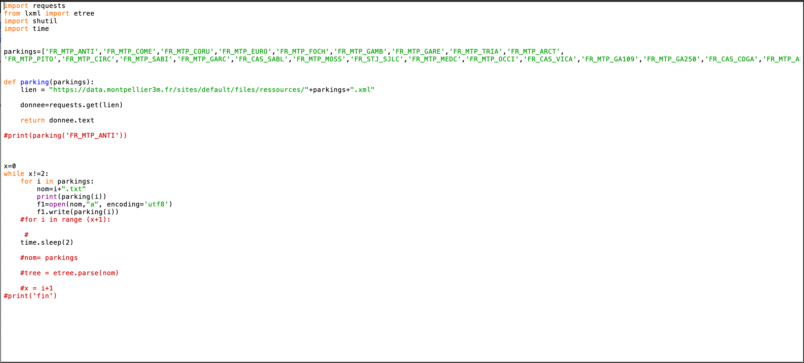
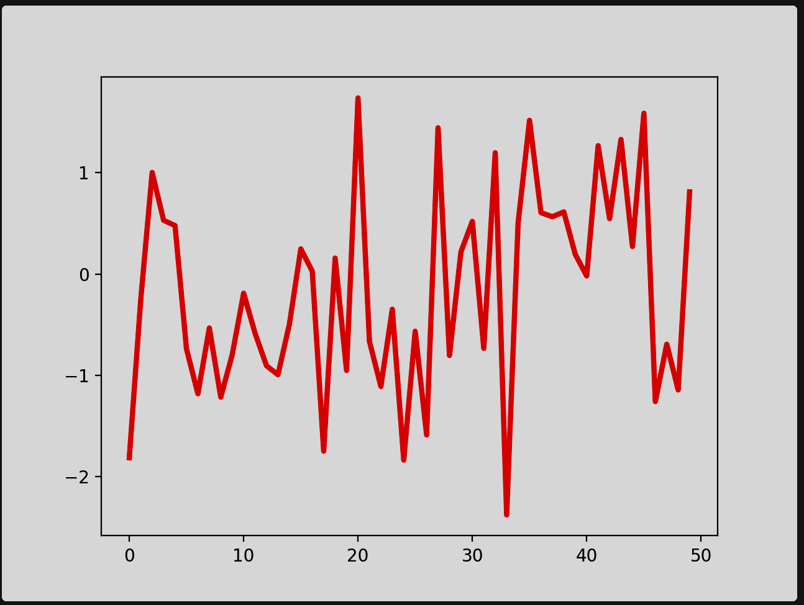

Pour récuperer les données de chaque parkings, j'ai fais un programme qui permet de récuperer toute les secondes les données de chaques parkings comme par exemple, Le nom du parkings, place total du parking, place libre et si il est ouvert ou fermé.
Voici mon programme python:

Moyenne des taux des parkings
Pour faire l'analyse du taux d'occupations des parkings sur 2 jours, j'aurais fais un programme qui calcule tous les données de chaques parkings et un programme python avec matplotlib qui aurait fait des graphique pour pouvoir mieux visualiser
Comme par exemple :
